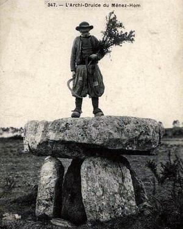
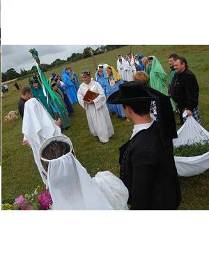

La fête de Juin
June Festival Song
Dialecte de Cornouaille
|
Cela est confirmé dans la table B: " Voilà le beau temps, voilà le mois de mai, la bague d'argent ou la 'sinture' d'argent: chanté par Anaïc de Ti-nevez, Kerigasul-Nizon". En outre, La Villemarqué a noté page 253 de son cahier, à propos d'un autre chant "Ar Yaouankiz" (la Jeunesse), qu'il le tient de "A. Marianne Ollier, femme Delliou, qui a déjà chanté 'ND du Folgoat' publié, 'Erru an hañv hag ar miz Mae', 'An drougrans' et 'La fête de juin'" . - Sous forme manuscrite: . Penguern, tome 89: "Entré Plouider ha Trelez" (Henvic, 1851) (reproduit dans la reue "Gwerin", 5); tome 112, 28 "Gwechal m'am-eus bet amzer (Taulé, 1850); tome 112, 64, "Tre Plouider ha Trelez". - publié en recueils: . Herrieu, dans "Gwerzenneu ha Sonenneu Breiz Izel": "En Ter Seien" (Baud). . F. Cadic , dans "Paroisse Bretonne de Paris", janvier 1905: "Bet zo bet un amzer". |
Confirmed in Table B as follows: " Here is the fine weather, the month of May, the silver ring or the silver girth: sung by Anaïc of the New cottage at Kerigazul near Nizon". Besides, La Villemaqué wrote a margin note to the song "Ar yaouankiz" (the Youth), on page 253 of his copy book, to the effect that he learnt it from the singing of "A. Marianne Ollier, wife of Delliou, who also sang 'ND du Folgoat' (already published), 'Erru an hañv hag ar miz Mae', 'An drougrans' and 'the June festival'" . - In MS form: . By Penguern, book 89: "Entré Plouider ha Trelez" (Henvic, 1851) (printed in the periodical "Gwerin", 5); book 112, 28 "Gwechal m'am-eus bet amzer (Taulé, 1850); tome 112, 64, "Tre Plouider ha Trelez". - Printed in collections: . by Herrieu, in "Gwerzenneu ha Sonenneu Breiz Izel": "En Ter Seien" (Baud). . and by F. Cadic , in "Paroisse Bretonne de Paris", January 1905: "The three ribbons". |
Mélodie - Tune
(Sol majeur, arrangement: Friedrich Silcher, 1841)
| Français | English |
|---|---|
|
L'ANCIEN PATRON
1. Bonjour, jolie commère, Bonjour à vous je vous dis; (bis) C'est un amour sincère, Ta la ri ta la la C'est un amour sincère, Qui me conduit ici. L'ANCIENNE PATRONNE 2. La bague à moi remise, Toute d'argent qu'elle soit, N'a fait votre promise De celle que voilà. 3. Reprenez votre bague Emportez-la pour toujours. Car ce sentiment vague En moi n'est pas l'amour. 4. Jadis, il faut bien dire, - Ce temps est loin désormais -, Pour un gentil sourire, Mon cœur j'aurais donné. 5. Il me cherche querelle, Le temps nouveau revenu. A des amours nouvelles, Je ne sourirai plus. L'ANCIEN PATRON 6. Lorsque j'étais jeune homme, Je portais les trois rubans: Le bleu-ciel, le vert-pomme, Le troisième tout blanc. 7. Le vert, pour ma commère - Tout en lui rendant honneur - Disait l'amour sincère Qui habitait mon cœur. 8. Le blanc avait pour tâche Cet amour, face au soleil, De le dire sans tache, A nul autre pareil. 9. Et le bleu voulait dire Qu'avec elle je voulais Vivre en paix. Je soupire, Le voyant, désormais, 10. Car abandonné d'elle, Ah, quel malheureux je suis! Ainsi la tourterelle Quitte-t-elle son nid. LE NOUVEAU PATRON A LA NOUVELLE PATRONNE 11. Il est temps que revienne Avec juin le doux printemps, Qu'ensemble se promènent Enfin les jeunes gens. 12. Si partout les fleurs laissent Eclater mille couleurs, De même la jeunesse Veut épancher son cœur. 13. Voici que l'aubépine S'ouvre et répand son parfum. Chez les oiseaux chacune A rejoint son chacun. 14. Ma belle, allons ensemble Nous promener dans les bois; Dans les feuilles qui tremblent Du vent ouïr la voix. 15. Le long de la rivière On entend le chant de l'eau Auquel dans la clairière. Font écho les oiseaux. 16. Un doux épithalame Que ce concert enchanteur: De quoi réjouir les âmes Et consoler les cœurs! Traduction Christian Souchon (c) 2008 |
THE FORMER PATRON
1. Good day to you, fair maiden, O, Good day to you I say! (twice) It is heart-felt devotion Ta la ri ta la la It is heart-felt devotion Caused me to come your way. THE FORMER PATRONESS 2. Young man, do not consider That betrothed to you I were, Because a ring of silver You gave me once to wear. 3. Of your silver ring dispose And with it you may go, too In my heart is left no love. Nay, for neither of you. 4. For it is now all over, Gone ne'er to return, the time When I would love whoever Would come my way and smile. 5. But time has become captious, It gives in to me no whim. May smile whoever wishes. I shall not smile to him. THE FORMER PATRON 6. Formerly when I was young I wore three ribbons bright One was green, blue the second And the third one was white. 7. The green one was in honour Of my patroness so kind With love to her brimmed over Both my heart and my mind. 8. The white one I had laid on For everybody to see, It would proclaim the pure bond That linked her and me. 9. The blue one was to live in Peace with her until I die But now when I look at it Hopelessly I must sigh. 10. For I have been forsaken, And now I find her remote The wanton dove has taken Wing to another cote. THE NEW PATRON AND THE NEW PATRONESS 11. Spring time at last returned Along with the month of June And everywhere young couples To each other attune. 12. The flowers in the meadows Are wide open today. So are the hearts of all youths You see coming your way. 13. O look, the hawthorns blossom. Smell their scent: it's at its best. Listen, the small birds have come Together and build nests. 14. Come with me, pretty darling We'll take a walk through the grove We'll listen to the trembling Of the leaves on the boughs. 15. And to the babbling water On pebbles along the creeks; To the birds of the heavens High up on top the trees. 16. All of them with their own song, Some way of their own will find To solace in their own tongue Our hearts and thrill our minds! Translated by Christian Souchon (c) 2008 |
Cliquer ici pour lire les textes bretons.
For Breton texts, click here.

|
Résumé
La Villemarqué nous apprend, dans ses commentaires, que la "fête de juin" était en voie de disparition à l'époque où il composait son recueil. Comme le "Sacre du Printemps" qui a inspiré Stravinsky, l'origine de cette célébration se perdrait dans la nuit des temps. Elle avait lieu près d'un dolmen et déjà en 658 un concile tenu à Nantes défendait de déposer aucune offrande sur les mégalithes et ordonnait aux évêques de détruire ceux-ci. On se réunit chaque samedi du mois de juin à quatre heures. Un jeune homme porte un nœud de rubans bleu, vert et blanc à la boutonnière: c'est le patron de la fête. Le patron précédent a transmis son titre et sa charge au patron de la fête nouvelle en lui accrochant par surprise, à la boutonnière,le nœud de rubans qu'il portait. Le nouveau patron se procurera de la même manière un successeur. En attendant, il choisit une commère, au doigt de laquelle il passe une bague d'argent, puis ils ouvrent tous deux la danse aux applaudissements de la foule. Fête de mai ou fête de juin? Les trois rubans En comparant avec le "Chant des Jeunes gens", on constate aussi que La Villemarqué a remplacé dans les strophes 6 et 7, de sa composition, une des trois couleurs du drapeau de la République (citées dans l'ordre rouge, bleu, blanc , comme signes de sincérité, de pureté et de paix): le vert a détrôné le rouge, porté sur le bras, comme symbole d'amour ardent. Dans ce chant, une femme mariée, tire les conséquences de l'échec de sa vie conjugale et fait don à la Vierge des fameux trois rubans qu'elle portait le jour de son mariage. Druides d'hier et d'aujourd'hui  On peut se demander pour quelle raison La Villemarqué a opéré cette substitution de couleurs.Dans l'argument et les notes, dès 1839, il affirme que ces couleurs (vert, bleu et blanc) "étaient celles des druides, des bardes et des augures". Une note de bas de page indique qu'il tire cette surprenante précision de l'ouvrage "Druidism" dont l'auteur est aussi celui d'un dictionnaire Anglo-gallois, William Owen Pughe (1759-1835) . Celui-ci reprend les exposés du très imaginatif Iolo Morganwg sur les rites et les croyances attribués aux anciens druides dans ses "Elégies héroïques de Llywarch Hen" parues en 1792 et auquel cet "Essai sur le Bardisme" tient lieu de préface. Dans l'édition de 1845 du Barzhaz, La Villemarqué précise d'ailleurs, qu'il s'agit des druides "cambriens". A partir de 1845 l'argument s'enrichit d'une longue description de la fête telle qu'elle est mémorisée par un cultivateur des environs de la Feuillée et où, outre les 3 couleurs, le barde antique et sa harpe réapparaissent en la personne du recteur (curé) qui joue de la musique "sur un instrument d'ivoire aux cordes d'or"! La carte postale ancienne ci-dessus, montre en effet un personnage en bragoù-braz juché sur un dolmen arborant fièrement une serpe et un bouquet de gui! Mais le véritable fondateur du "néo-druidisme" fut Iolo Morganwg qui réunit à Londres le "Gorsedd Beirdd Ynis Prydain" (en gallois, Assemblée des bardes de l'île de Bretagne), suivant un rite inspiré de la franc-maçonnerie et d'auteurs romantiques divers tels que William Blake (1857-1827). Outre la croyance à la métempsychose (migration de l'âme), il avait développé une "métaphysique des cercles concentriques" allant de l'"Anaon" à la "Gwennvezh" (de l'Autre-monde à la pureté du Ciel), et dont il est question à la strophe "Trois" des Séries du Barzhaz . Druidisme ou légitimisme? On pourra s'assurer en examinant une photo récente d'une célébration druidique, où le gui et la serpe figurent en bonne place, que les trois couleurs bleu, vert et blanc, sont toujours celles dont se revêtent les officiants! Il y a peut-être une autre raison à la disparition des couleurs de la république dans la version que le "Barde de Nizon" donne du "Chant des jeunes gens": le légitimiste (partisan du petit fils de Charles X, le comte de Chambord) qu'était La Villemarqué dans les années 1830, ne pouvait invoquer qu'à contrecœur le drapeau tricolore. C'est pourtant à lui que fait allusion, bien évidemment, le chant tel qu'il figure dans les carnets de Keransquer et tel que Herrieu et Cadic l'ont collecté. Ce symbole révolutionnaire avait disparu en 1814, mais Louis-Philippe qui avait combattu dans les armées républicaines à Valmy et Jemappes, l'avait rétabli en 1830. On sait que le drapeau tricolore dut encore s'imposer contre l'étendard rouge qui rappelait la répression d'une manifestation au Champ de mars en 1791 (et fut celui de la Commune de Paris en 1870) et que c'est Lamartine qui l'imposa comme drapeau de la Seconde République en 1848. On se souvient aussi que le retour à la royauté échoua, en 1873, à cause du refus intransigeant du prétendant légitimiste d'accepter le drapeau tricolore. En Vendée il faudra attendre jusqu'en 1916 pour que le drapeau tricolore soit admis dans l'enceinte des églises! Le passionnant "Almanach de la mémoire et des coutumes" de la Bretagne publié par Claire Tiévant avec une préface de Henri Queffélec, chez Hachette, en 1981, décrit à la page du 1er juin, dans la rubrique "Coutumes et croyances", une "fête de juin" en tout point semblable à celle décrite par Villemarqué. Le "noeud" de rubans du "Tad-Paëron" y devient un "flot" de rubans aux anciennes couleurs sacerdotales: le blanc couleur des druides, le bleu couleur des bardes, le vert couleur des devins. (Fête interdite par l'Eglise depuis la fin du Moyen Age)." Il y a fort à parier que l'auteur n'a tiré ses informations que du Barzhaz Breizh et que l'existence de cette fête païenne, même au moyen-âge, reste bien problématique. Elle ne l'était pas pour La Villemarqué qui en 1866, un an seulement avant le début de la fameuse "querelle du Barzhaz Breizh", présentait le "Chant de la Fête de Juin", ainsi que la "Danse du Glaive" de son recueil, comme des exemples typiques d'art dramatique populaire breton, dans la Préface (p. 77) de son "Grand Mystère de Jésus" |
June festival or May Festival?
As stated by La Villemarqué in his comments, the June Festival tradition was already on the wane when he was composing his song collection. As for Stravinsky's "Rite of Spring", the origin of this celebration is as old as the hills. It took place near a standing stone and as soon as 658 a council held in Nantes prohibited making offerings on these stones which bishops were ordered to throw down. The celebration was held on the Saturdays of June, late in the afternoon. A young man wore a cockade of three ribbons, blue, green and white at his buttonhole: he was the patron of the feast. The previous patron had bestowed on him both title and duties of office by pinning on him by surprise the cockade he wore. The new patron would provide for a successor in the very same way. But, for the time being, he chose a patroness on whose finger he put a silver ring and the two opened the dance, to the cheering of the people. A May or a June festival? The three ribbons From the comparison with the "Song of the Youths", it appears that La Villemarqué also replaced in the stanzas 6 and 7 of his poem, one of the three colours of the Republican flag (quoted in the order: red, blue and white , as tokens of straightforwardness, purity and peacefulness). Red yielded to green as the symbol of ardent love. In this song a woman who is aware of the failure of her married life presents the Virgin with the three ribbons she wore on her wedding day. The ribbons of the bride , though the word "seienn" in the lyrics, the "singulative" of "seiz" (silk), refers to a single ribbon! Druids of now and druids of yore  One may wonder why La Villemarqué made this change of colours.As early as 1839 he asserts in his comments to the song that "[green, blue and white] were the colours of the druids, the bards and augurs of old". A footnote gives the source of this astonishingly precise statement: the essay "Druidism" whose author is well-known for his English-Welsh dictionary, William Owen Pughe (1759-1835). The latter quoted the fanciful views of Iolo Morganwg on rites and creed he ascribed to the ancient druids in his "Heroic elegies of Llyvarch Hen" published in 1792 to which the aforesaid essay was the introduction. In the 1845 edition of the Barzhaz, La Villemarqué, admits: this applies to the "Cambrian druids" (=Welsh). As from 1845, the "Argument" is enhanced by a long description of the June feast as remembered by a farmer from the La Feuillée area. In addition to the three colours, the ancient bard wielding his harp reappears in the person of the vicar who "used to play a gold stringed instrument"! The opposite old post card shows such a character perched upon a stone table who proudly displays a bunch of mistletoe and a scythe! But the true founder of Neo-Druidry was the Welshman Iolo Morganwg who convened in London the first "Gorsedd Beirdd Ynis Prydain" (in Welsh, Gathering of the Bards of Britain), performing rituals borrowed from free-masonry and various romantic authors like William Blake (1857-1827). Beside the acceptance of reincarnation, he had developed a metaphysic theory of the "concentric rings of existence" from "Anaon" to "Gwennvezh" (from the Otherworld to purity or Heaven), which is referred to in stanza "Three" in the "Series" of the Barzhaz . The inscription form sent to Briseux on 18th September 1843 used as an epigraph a line by the old Welsh poet Taliesin "Ho Doué e veulant, ho ies a virant" (they praised their God and preserved their tongue), alluding to the main two purposes of the guild whose "Kentañ Penn-Sturier" (first chief-helmsman) was no other than La Villemarqué: defence and illustration of the Breton language, to foil attempts against the Roman Catholic Faith. However this group refrained from any noticeable public performance. It was not until 1899 that, due to the exertions of Jean Le Fustec (1855-1910) and François Jaffrennou alias "Taldir" (1879-1956), a "Goursez of Brittany" was founded in connection to the Welsh organization. Druidry or Legitimism? One may satisfy oneself, by examining the recent picture above of a Druidic gathering where mistletoe plays an evident part, that the three colours blue, green and white still are those of the togas of the officiating "priests"! There may be, however, another reason to the discarding of the colours of the Republic from La Villemarqué's rendering of the "Song of the Youths". In fact, in the 1830ies, La Villemarqué was a suporter of King Charles X 's grandson, Count of Chambord, a so-called Legitimist who would but reluctantly mention the French tricolour. And yet it is undoubtedly to it that the song in the Keransquer copybook alludes, as well as those gathered by Herrieu and Cadic. This revolutionary symbol had been given up in 1814, but the new king Louis-Philippe who had fought in the armies of the Republic at Valmy and Jemmappes had restored it in 1830. As we know, the tricolour had to compel recognition against the red standard that reminded of the bloody repression of a riot in Paris in 1791 (and was adopted by the 1870 Paris Commune uprisers). It was the poet Lamartine who imposed it as the flag of the Second Republic in 1848. We also remember that the return of the monarchy in 1873 was thwarted by the intransigence of the Legitimist pretender who refused to adopt the tricolour. In Vendée it was not until 1916, that the tricolour was allowed to be displayed in churches. The thrilling "Almanac of memorable customs" of Brittany composed by Claire Tiévant with a une preface by Henri Queffélec, and published by Hachette, in 1981, describes on the page of the 1st of June, under the heading "Costums and beliefs", a "feast of June" in every way identical with Villemarqué's comments. Except that the "knot" of ribbons worn by the "Tad-Paëron" has become a "cascade" of ribbons with the ancient priests' colours: white for the druids, blie for the Bards, green for the ovats. (Celebration forbidden by Church since the early Middle Ages)." My guess is that the only information source was the Barzhaz Breizh, so that the existence of this heathen festival, even in its medieval form, is very questionable. But it was not for La Villemarqué, who in 1866, only one year before the outset of the famous "Barzhaz Breizh controversy", extolled his "June Festival Song", as well as his "Dance of the Sword" , as typical instances of Breton popular dramatic art, in the Preface (p. 77) to his "Great Mystery of Jesus" |